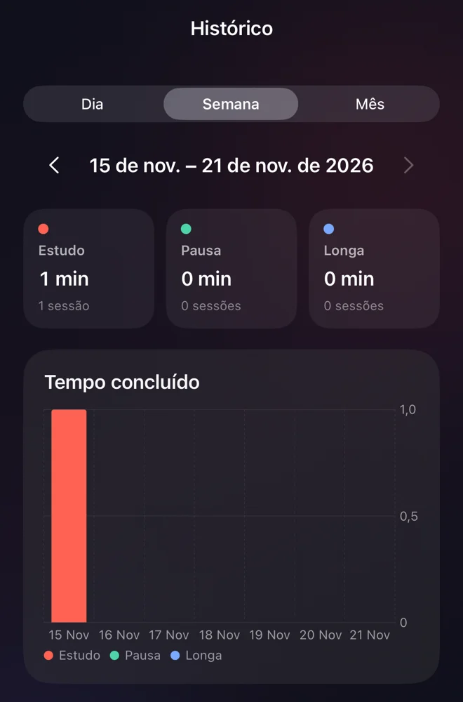

Suporte do Ciclou
Estude em fila,
não por agenda.
O Ciclou monta um ciclo de estudos com as suas matérias, diz qual é a matéria da vez e mostra seu acerto em questões em cada uma.
O que o Ciclou faz
Um cronograma preso aos dias da semana quebra no primeiro imprevisto: perdeu a terça, perdeu a matéria da terça. No ciclo de estudos, as matérias formam uma fila. Você estuda a próxima da fila quando puder, e nenhuma fica para trás.
-
Cada matéria tem um peso
Você define quantos blocos cada matéria recebe por ciclo. A que pesa mais no edital, ou em que você tem mais dificuldade, aparece mais vezes.
-
O app diz a matéria da vez
A tela inicial mostra o que estudar agora. As matérias se revezam, para você não passar o dia inteiro na mesma nem esquecer as menores.
-
Dia perdido não desmonta o plano
Não há matéria presa a uma data. Se você ficou três dias sem estudar, a fila continua exatamente de onde parou.
-
Acerto em questões por matéria
Ao fim de cada bloco, registre o assunto, as questões resolvidas e os acertos. O histórico mostra o percentual de cada matéria e onde reforçar.
-
O ciclo fecha e recomeça
Quando todas as matérias cumprem seus blocos, o ciclo é concluído e o próximo começa. Você acompanha quantos ciclos já fechou.
Um exemplo de ciclo
Com Português valendo 3 blocos, três matérias valendo 2 e Informática valendo 1, o ciclo tem 10 blocos e o app sugere esta ordem:
- Português
- Raciocínio Lógico
- Constitucional
- Administrativo
- Informática
- Português
- Raciocínio Lógico
- Constitucional
- Administrativo
- Português
Você pode escolher outra matéria ou pular a da vez a qualquer momento. O app ajusta a fila.
Perguntas frequentes
O que é um ciclo de estudos? É uma fila de matérias. Cada matéria recebe um número de blocos por ciclo, e você estuda na ordem, sem depender do dia da semana. Quando todas as matérias cumprem seus blocos, o ciclo fecha e o próximo começa.
Como monto meu ciclo? Na primeira abertura, escolha um modelo (ENEM ou Concursos) ou toque em Criar minhas matérias. Na aba Matérias, toque em + para adicionar, toque em uma matéria para mudar nome, cor e blocos por ciclo, e use Editar para reordenar a fila. Os modelos são só um ponto de partida.
Como começo um bloco? Na aba Ciclo, o cartão Agora mostra a matéria da vez. Toque em Estudar para iniciar o bloco. Para estudar outra matéria, toque nela na fila do ciclo. Pular passa para a próxima sem registrar nada.
Como registro assunto e questões? Ao fim de cada bloco, o app pergunta o assunto estudado, quantas questões você resolveu e quantas acertou. O registro é opcional. Para preencher ou corrigir depois, toque na sessão na aba Histórico.
As pausas contam no ciclo? Não. Só os blocos de estudo concluídos avançam o ciclo. Ao terminar um bloco, o app deixa a pausa curta selecionada, e você decide se quer usá-la.
Como ajusto a duração dos blocos e a meta? Toque no botão de ajustes na aba Ciclo. Os padrões são 25 minutos de estudo, 5 de pausa e 15 de pausa longa, com meta de quatro blocos por dia.
Por que o aviso ficou sem som? Confira a permissão e os sons das notificações do Ciclou nos Ajustes do iPhone. Nos ajustes do app, confira a opção Som ao concluir.
Como vejo o bloco com a tela bloqueada? As Atividades ao Vivo mostram a matéria e a contagem na Tela Bloqueada e, em modelos compatíveis, na Dynamic Island. Confira se o recurso está permitido para o Ciclou nos Ajustes do iPhone.
O que acontece se eu excluir uma matéria? Ela sai da fila do ciclo. As sessões já registradas continuam no histórico com o nome da matéria.

Fale com o suporte
Para pedir ajuda com o Ciclou, escreva para alaorjr@icloud.com ou abra um relato no GitHub Issues.
Se puder, informe o modelo do iPhone, a versão do iOS e o que você estava fazendo quando o problema aconteceu.
Os relatos e anexos no GitHub são públicos. Evite incluir informações pessoais.
Abrir relato no GitHub